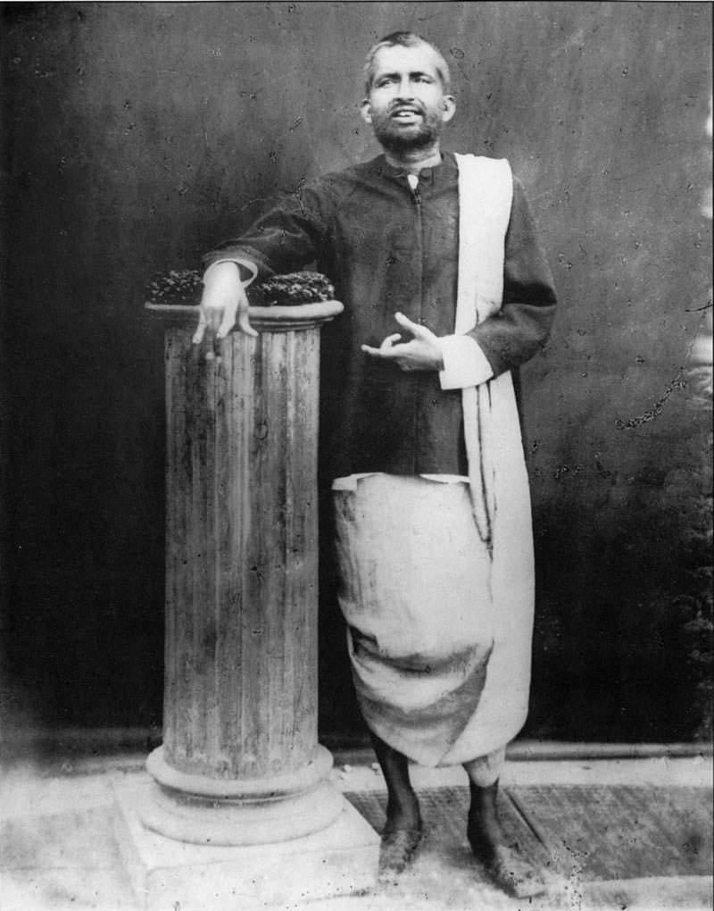

 Ramakrishna Paramahansa was an Indian Hindu mystic and saint in 19th century Bengal. He eschewed business and worldly affairs from a early age and pursued the Divine throughout his life. He believed in divine embodiment of the Supreme Being in all individuals.
Born into poor Bengali family Ramakrishna would experience episodes of spiritual ecstasy from everyday occurrences starting in his childhood. He would go into trances while praying or observing religious dramas. As a child he loved to create clay models of Hindu deities and he was drawn to folk stories. He became a talented storyteller himself and always remained a simple man with an almost childlike quality and devotion to love of the Divine and renunciation of worldly gain.
Ramakrishna went on to study under gurus and spiritual teachers of diverse schools of Hinduism and yoga. He incorporated diverse philosophies into his own, always emphasizing that the realization of the existence of the Divine is the supreme goal of all living beings. Various religions were for him only a means to reach the absolute and he said to have went as far as to practice devotion as both a Muslim and a Christian for brief periods.
Ramakrishna's influence reached all strata of society and he did not differentiate based on caste. He is one of the most celebrated mystics of all time and he had a profound effect on many. Among his disciples was Swami Vivekananda who became famous in his own right for introducing the West to Hindu philosophy, yoga and the teachings of his guru Sri Ramakrishna.